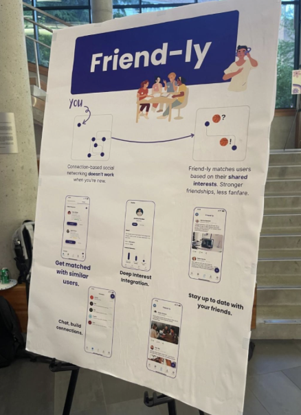

Building a Recommendation Algorithm for a Student Social App
How I replaced a graph database idea with Jaccard Similarity, MinHashing, and LSH to match UW students based on shared interests.
Project Links
GitHub: Friend-ly Repository
Link to the presentation I did in front of students and professionals! : LinkedIn Post

Overview of the Project
This project was built under the Husky Coding Project at UW. The goal of the project was to create a social media platform where UW students can connect with other students based on shared interests, hobbies, and campus communities.
The main problem this project focuses on is student discovery. New students may have a hard time finding people with similar interests, especially outside of their classes, clubs, or existing friend groups. Instead of making users manually search through many profiles, the platform recommends students who have overlapping interests so they can find more relevant connections faster.
In this project, I worked on the backend, specifically the API design and the recommendation logic for matching users based on their interests. I initially explored graph databases such as Neo4j and Amazon Neptune because the problem naturally fits a graph structure, where users and interests can be represented as connected nodes.
However, after looking into the cost and hosting requirements, I realized that using a graph database was not practical for our project. We did not have the budget or infrastructure to maintain that kind of setup, so I looked for a lighter approach that could still solve the matching problem. I ended up using Jaccard Similarity with MinHashing and Locality-Sensitive Hashing to compare users based on their shared interests more efficiently.
This algorithm is useful in other fields because many products need a practical way to match or group similar items from simple data, such as interests, tags, skills, categories, preferences, or document keywords. The same approach can apply to employee networking, mentorship matching, event recommendations, support ticket grouping, document similarity, duplicate detection, or any platform where users need to find relevant matches from a large set of options.
In this blog, I will explain what Jaccard Similarity with MinHashing and Locality-Sensitive Hashing is, and how I applied it to this project.
Jaccard Similarity with MinHashing and LSH
To recommend users based on shared interests, I first needed a way to measure how similar two users are. Since each user has a set of interests, this problem can be treated as a set comparison problem. For example, if one user likes gaming, hiking, and photography, while another user likes gaming, photography, and music, then their similarity depends on how many interests overlap compared to the total number of unique interests between them.
This is where Jaccard Similarity comes in. Jaccard Similarity compares two sets by dividing the number of shared items by the total number of unique items across both sets.
A score of 0 means the two users have no shared interests, while a score of 1 means their interests are exactly the same. In this project, that score can be used to estimate how closely two users match based on their selected interests.
However, using only Jaccard Similarity creates a scalability problem. If the platform has many users, comparing every user against every other user would take O(n²) time. That means as the number of users grows, the number of comparisons grows very quickly. This is not good for a recommendation system because users expect matches to appear quickly instead of waiting for the backend to compare every possible pair.
To make the matching process more efficient, I used MinHashing. Instead of comparing every user’s full list of interests directly, MinHashing turns each user’s interest set into a smaller signature that still represents the original set. This makes it faster to estimate which users are likely to be similar before doing a more detailed comparison.
After that, I used Locality-Sensitive Hashing, or LSH, to group users with similar signatures. LSH divides each signature into smaller sections called bands, then places users into buckets based on those sections. If two users land in the same bucket, they become candidate matches. This helps the system avoid comparing every user with every other user and focus only on users who are more likely to share similar interests.
Implementation
In the database schema, I separated interests into two levels: the specific interest and the interest category. For example, basketball and swimming are different interests, but both belong under the sports category. I did this because two users may not have the exact same interest, but they may still be similar if their interests fall under the same category.
For example, one user may choose basketball while another user chooses swimming. Their direct interest overlap is not the same, but they are still both interested in sports. Because of that, I applied the similarity logic to both the interest level and the category level. This allowed the recommendation system to give credit for exact interest matches while still recognizing broader similarities between users.
The first step was calculating the MinHash signature for each user’s interests and categories. For each user, the algorithm repeatedly hashes every value in the set and keeps the minimum hash value from each round. Each minimum value becomes one part of the user’s MinHash signature.
const sig = [];
for (let i = 0; i < numHashes; i++) {
let min = Infinity;
for (let val of augmentedSet) {
min = Math.min(min, hash(i, val));
}
sig.push(min);
}
The reason this hashing process is repeated multiple times is to improve the accuracy of the
similarity estimate. One hash value alone would be too unstable, because it may not represent
the set well. By repeating the hashing process several times, the final signature gives a better
approximation of how similar two users are. In this implementation, numHashes
represents the number of repeated hash rounds, and I set it to 10 for now.
After calculating the MinHash signatures, each user has a mapping from their user ID to an array of hash values. For example:
{
1: [12, 55, 81, 9, 6, 9],
2: [12, 55, 8, 3, 21, 49]
}At this point, the system has a compact representation of each user’s interest set. However, the goal is still not to compare every user against every other user. That would bring back the same scalability problem. This is where Locality-Sensitive Hashing, or LSH, is used.
LSH takes the MinHash signature and splits it into smaller groups called bands. Users that land in the same bucket for a band become candidate matches. In other words, LSH helps the system quickly narrow down which users are likely to be similar before calculating the final Jaccard score.
const numHashes = 10;
const bands = 5;
const rowsPerBand = numHashes / bands;
In this case, the signature has 10 hash values and is split into 5 bands. Since
rowsPerBand is 2, each band contains 2 hash values. For example, if a user has this signature:
[12, 55, 81, 9, 6, 9, 20, 3, 11, 7]Then the bands would look like this:
Band 0: [12, 55]
Band 1: [81, 9]
Band 2: [6, 9]
Band 3: [20, 3]
Band 4: [11, 7]In the implementation, each bucket key is created using the current band number and the hash values inside that band. For example, the first two bands would become:
"0:12-55"
"1:81-9"Here is the bucket generation function:
function getBuckets(userSigs) {
const buckets = {};
for (let [userId, sig] of Object.entries(userSigs)) {
for (let b = 0; b < bands; b++) {
const band = sig
.slice(b * rowsPerBand, (b + 1) * rowsPerBand)
.join("-");
const key = `${b}:${band}`;
if (!buckets[key]) buckets[key] = [];
buckets[key].push(userId);
}
}
return buckets;
}The output of this function is a mapping from bucket keys to users who landed in the same bucket. For example:
{
"0:12-55": [1, 2],
"1:81-9": [1]
}This means users 1 and 2 are candidate matches because they share the same hash pattern in band 0. The system can then focus on comparing these likely matches instead of checking every possible user pair. This is the main reason LSH is useful here. It reduces the number of comparisons needed before running the more detailed Jaccard Similarity calculation.
After finding the candidate matches, I calculate the Jaccard Similarity for both interests and categories. The interest score measures exact overlap between selected interests, while the category score gives credit for broader similarity.
function jaccard(a, b) {
if (!a || !b || a.length === 0 || b.length === 0) return 0;
const setA = new Set(a);
const setB = new Set(b);
const inter = [...setA].filter(x => setB.has(x));
const union = new Set([...setA, ...setB]);
return union.size > 0 ? inter.length / union.size : 0;
}Then, I combine the direct interest similarity and the category similarity into one final score.
function calculateSimilarity(userA, userB) {
const interestsA = userInterests[userA] || [];
const interestsB = userInterests[userB] || [];
const directJaccard = jaccard(interestsA, interestsB);
const categoriesA = interestsA
.map(i => interestToCategory[i])
.filter(Boolean);
const categoriesB = interestsB
.map(i => interestToCategory[i])
.filter(Boolean);
const categoryJaccard = jaccard(categoriesA, categoriesB);
const INTEREST_WEIGHT = 0.5;
const CATEGORY_WEIGHT = 0.5;
const score =
(INTEREST_WEIGHT * directJaccard) +
(CATEGORY_WEIGHT * categoryJaccard);
return {
score,
interestJaccard: directJaccard,
categoryJaccard: categoryJaccard,
common: interestsA.filter(i => interestsB.includes(i))
};
}In this version, I gave direct interest overlap and category overlap equal weight. This means the system values exact shared interests, but it also considers users similar if they are interested in the same general category. For example, two users who both choose basketball would score higher than two users who choose basketball and swimming, but the basketball and swimming users would still receive some similarity score because both interests belong to sports.
Conclusion
The recommendation system in this project uses interests as the main data source, but the same approach can be applied to other types of grouped or tag-based data. In this case, each user has a set of interests, and the system tries to find users with similar sets. In another product, those sets could be skills, job preferences, product categories, saved items, watched content, document keywords, support ticket labels, or event preferences.
The main idea is that Jaccard Similarity, MinHashing, and LSH are useful when the system needs to find similar items from a large group without comparing everything one by one. For this project, the “items” are students and the comparison is based on shared interests. In a workplace platform, the same logic could match employees with similar skills or mentorship goals. In a marketplace, it could recommend products based on shared tags or categories. In a support system, it could group similar tickets based on issue labels or keywords.
Because of that, the value of this approach is not limited to student social networking. It is a lightweight way to build matching and recommendation features when the data can be represented as sets. Instead of using a more expensive graph database or a heavier machine learning system, this approach can still provide practical recommendations by narrowing down likely matches first and then calculating similarity more directly.
Overall, this project shows how a simple interest-based matching problem can be turned into a more scalable recommendation workflow. By combining MinHashing, LSH, and Jaccard Similarity, the system can reduce unnecessary comparisons while still recommending users based on meaningful overlap.